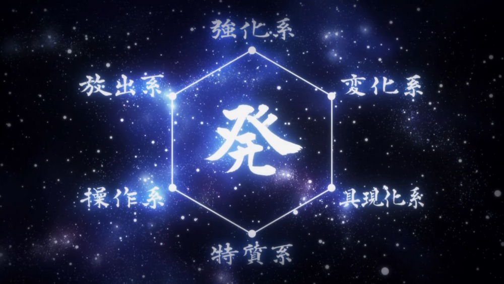
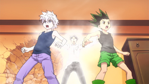
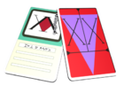
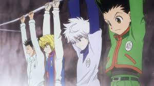

Concepts
Nen
Nen (念ネン or ネン, Nen—lit. "Sense";[1]* "Mind Force" in the Viz transl.)[2] is one of the defining features of the manga Hunter × Hunter by Yoshihiro Togashi. It is a technique that allows a living being to use and manipulate their own life energy (known as aura);[3] the term "Nen" can also be used in conversation to refer to aura. A person capable of utilizing Nen is colloquially referred to as a "Nen user" (能のう力りょく者しゃ, nōryokusha—lit. "ability person"), while those who cannot go by the designation "non-users" (一いっ般ぱん人じん, ippanjin—lit. "ordinary person").[4] Because one can craft a great variety of parapsychological abilities through Nen, it is considered a dangerous power that is kept hidden from the public at large[5] to maintain balance in society.[6] Aura (オーラ, Ōra) is the life energy produced by all living bodies vital for survival. Aura from all parts of the body has a tendency to flow together, producing one mass of energy. This happens without the individual's awareness, typically resulting in a slow leak of aura continually escaping the body[3] and stemming up and off the top of the head.[7] The pores or points on the body from which aura flows out from are called "Aura Nodes" (精しょう孔こう, Shōkō). In normal conditions, aura leaks away constantly without exceedingly harmful consequences; however, if someone whose Aura Nodes are fully open does not attempt to close them or control the flow of their aura, they will soon grow so fatigued they will be unable to stand[8] or even lose consciousness.[9] Grave wounds such as mutilations can disrupt the flow of aura in the affected body part and even stop it altogether.[10] Controlling one's Aura Nodes is the first step to becoming a Nen user. Aura can be seen only after the Aura Nodes in the eyes are opened. People who have not trained in Ten will leak aura similar to water vapor from a kettle. Nonetheless, sensitive individuals can feel its presence without being aware of its existence. It has been described as feeling like a warm, viscous fluid at rest,[8] whereas powerful, refined auras produce a sensation that feels akin to needles pricking into the skin.[11] Hostile aura generates extremely unpleasant sensations, which can cause a non-user to halt in their tracks and be unable to walk towards the source as if a wall had been erected in front of them.[8] Since every living being emits aura subconsciously, learning to sense aura is a useful skill for those tracking living things or hunting non-living things infused with aura. An experienced user of Nen can judge the location and relative strength of their opponents by reading the output of their aura.[12] On the other hand, skilled Nen users can also regulate the flow of their aura so they appear to be beginners or regular individuals.[7]
Hunters
Hunters (ハンター, Hantā) are licensed, elite members of humanity who are capable of tracking down secret treasures, rare beasts, or even other individuals. They can also access locations that regulars cannot access.[3] To obtain a license one must pass the rigorous annual Hunter Examination run by the Hunter Association, which has a success rate of less than one in a hundred-thousand.[4] A Hunter may be awarded up to three stars: a single star for making "remarkable achievements in a particular field"; they may then be upgraded to two stars for "holding an official position" and mentoring another Hunter up to single star level; and finally upgraded to three stars for "remarkable achievements in multiple fields."[5] A Hunter License is a type of card given exclusively to Hunters after they pass the Hunter Exam which proves the status of the owner and has multiple benefits. It provides free access to most of the public services and permission to go almost anywhere in the world without a visa. It also grants the ability to kill without facing major legal consequences, although there are exceptions. A Hunter License also grants access to guarded information as well as being an easy way to get jobs. Furthermore, there are collectors willing to buy it for a fortune that would sustain a Hunter's family for generations.[14]
Hunter Exam

The Hunter Exam (ハンター試験, Hantā Shiken) is a yearly event which an applicant must pass in order to become a Hunter, an elite member of humanity and a part of the Hunter Association. These exams consist of several tests and stages which can vary drastically. Thus far, 289 Hunter Exams have taken place.[1] The Head of the Exam Commission is the Chairman of the Hunter Association themselves.[2] Due to the large number of people who wish to become Hunters, the exam phases tend to be exceptionally difficult. Many applicants end up dead or handicapped. However, applicants who have access to Nen or special skills (such as survival skills or combat skills) prior to the exam will have tremendous advantages compared to the rest of the examinees. The Hunter Association hires people to "trim the fat", that is, to eliminate all the weak applicants who aren't worthy of taking the main exam, since the Association doesn't have the time or the resources to test everyone.[3] Navigators themselves are authorized to test them.[7]
